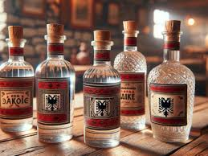
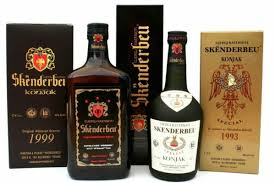

Rakia e rrushit është një nga rakitë më të njohura dhe më të konsumuara në Shqipëri. Ky alkool tradicional prodhohet në mënyra të ndryshme në të gjithë vendin dhe është një pjesë e trashegimisë kulturore shqiptare. Mblidhet rushi nga hardhia. Më pas fillon proçesi i shtypjes së rushit. Rushin e shtypur e grumbullon në një fuci ( hekuri ose dhe plastike) dhe e lë aty brenda pa e mbyllur plotësisht dhe hermetikisht kapakun, për disa ditë derisa të afrohen mizat e rakisë që të kryejnë fermentimin. Gjatë ktyre 3-4 ditëve ku kanë hyrë dhe mizat e kanë bërë punën e tyre duhet ta trazosh me ndonjë dru 2 herë në ditë. Në ditët në vijim fucisë i mbyllet kapaku hermetikisht që të mos marrw apo të nxjerre ajër dhe 1 herë në ditë duhet të hapet kapaku dhe të trazohet me dru, pasi trazohet shpejt e shpejt mbyllet kapaku përsëri hermetikisht (kjo bëhet për arsye se rrezikon të shpërthejë fucia si bombë në qoftë se nuk hapet të paktën 1 herë në ditë). Në ktë gjendje do qëndrojë minimumi 2 javë, kjo është dhe në varësi të kohës sepse nëse është nxehtë mjaftojnë 2 javë dhe nëse është freskët duhet lënë më shumë. Pasi kemi aritur në fund të dy-javëshit bëjmë gati kazanin ku do zihet rakia rrushit. Kazani duhet të jetë mundesisht i gjithi prej bakri që të dali raki e cilësisë së lartë. Duhet treguar kujdes me zjarrin sepse duhet të jetë konstant gjatë zierjes së rakisë. Pas disa minutash fillon të pikojë nga tubi rakia, pika e parë quhet dhe është në një gradacion shumë të lartë në fillim pastaj duke kaluar koha duke u zbutur gradacioni. Per te pare produktet tona kliko ketu.
Konjaku Skënderbeu është një pije alkoolike origjinale shqiptare me cilësi të mira organo-shqisore, prodhuar dhe degustuar për herë të parë më 1 shtator të vitit 1967. Konjaku është pije me cilësi të lartë, me karakter unik, i ëmbël dhe i pasur në shije. Konjaku Skënderbeu përgatitet, prodhohet dhe vjetrohet vetëm në kade, voza dhe fuçi të punuara me dru lisi, që i japin aromë, buketë dhe ngjyrë të veçantë. Në përbërje të tij ka raki rrushi të vjetëruar në dru lisi, ekstrakte bimësh mali (rënjë pelini), fruta të përpunuara, aroma limoni e kumbulle të zezë (tropojane), alkool etilik, mjaltë lulesh, ujë të zbutur etj. Pas mbledhjes, rrushi shtrydhet dhe lejohet të fermentohet. Per te pare produktet tona kliko ketu.
Vera e kuqe përfitohet nga mushti (pulpa) prej rrushit të kuq apo te zi që kalon nëpër fermentim së bashku me lëvoren e rrushit, gjersa vera e bardhë zakonisht përftohet me fermentimin e lëngut i cili del nga kokrra e rrushit të bardhë me shtypje, por gjithashtu mund te përfitohet nga mushti i ekstraktuar nga rrushi i kuq me kontakt minimal me lëvoren e rrushit. Verërat Rosé janë të përfituara nga rrushi i zi ku lëngu i ekstraktuar është i lejuar të jetë në kontakt me lëvoren për aq kohë sa ta fitoj ngjyrën e kuqe të celët (rose), ku lejohet një sasi e vogël e taninës te kalojë në lëngë cila gjendet në lëvoren e rrushit. Përgjatë fermentimit primar, I cili zakonisht zgjat prej një deri deri dy javë, majaja shëndron pjesën ma të madhe te sheqerit nga lëngu i rrushit në etanol (alkool). Pas fermentimit primar, lëngu transferohet në rezervuar për fermentim sekondar. Aty, sheqeri mbetur ngadalë shëndrohet në alkool dhe vëra kthjellohet. Më pas vera lejohet të qëndrojë në rezervuar të drurit para se të mbushen shishet, me ketë rast vera fiton një aromë ekstra. Koha prej prodhimit deri tek pirja mund te variroj prej disa muaj deri mbi 20 vjet. Megjithatë, vetëm rreth 10 % prej të gjithë verërave te kuqe dhe 5 % prej verërave të bardha shijojnë ma mirë mbas pesë viteve se do të shijojnë pas një viti. Prodhuesit shqiptarë mbrojnë me forcë se produkti i tyre ka një cilësi të mirë dhe se mund të konkurrojnë në tregun ndërkombëtar. Kanë filluar të prodhohen verëra të mira dhe cilësore që mund të konkurrencën me verën franceze apo italiane , por që vështirësia më e madhe është paragjykimi dhe mungesa e promovimit. Zona si Malësi e Madhe, Shtojë, Zadrima, Kallmeti, Fshatrat e Peshkopisë, zona kodrinore Tiranë-Durrës-Kavajë, fshatrat e Beratit, zona e Këlcyrës, Përmetit, Leskovikut, zona kodrinore e Vlorës, zona e Delvinës dhe deri në Xarë janë nga zonat më të shquara për prodhimin e rrushit për verë në Shqipëri. Per te pare produktet tona kliko ketu.